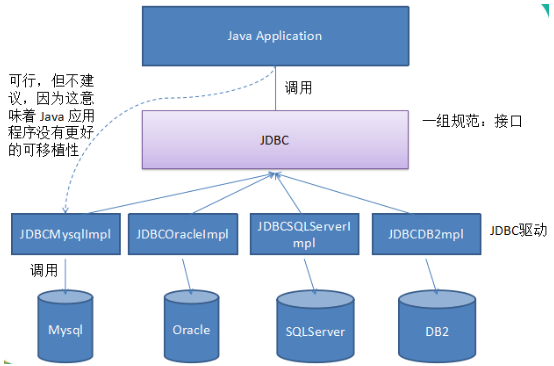
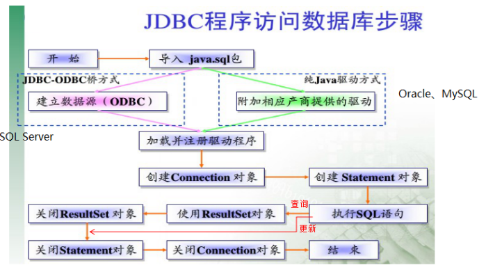

第一章 JDBC概述
之前我们学习了JavaSE，编写了Java程序，数据保存在变量、数组、集合等中，无法持久化，后来学习了IO流可以将数据写入文件，但不方便管理数据以及维护数据的关系；
后来我们学习了数据库管理软件MySQL，可以方便的管理数据。
那么如何将它俩结合起来呢？即Java程序<==>MySQL，实现数据的存储和处理。
那么就可以使用JDBC技术。
1.1 JDBC概述
JDBC：Java Database Connectivity，它是代表一组独立于任何数据库管理系统（DBMS）的API，声明在java.sql与javax.sql包中，是SUN(现在Oracle)提供的一组接口规范。由各个数据库厂商来提供实现类，这些实现类的集合构成了数据库驱动jar。

即JDBC技术包含两个部分：
（1）java.sql包和javax.sql包中的API
因为为了项目代码的可移植性，可维护性，SUN公司从最初就制定了Java程序连接各种数据库的统一接口规范。这样的话，不管是连接哪一种DBMS软件，Java代码可以保持一致性。
（2）各个数据库厂商提供的jar
因为各个数据库厂商的DBMS软件各有不同，那么内部如何通过sql实现增、删、改、查等管理数据，只有这个数据库厂商自己更清楚，因此把接口规范的实现交给各个数据库厂商自己实现。
1.2 JDBC使用步骤
代码编写步骤：
1、注册驱动
三部曲：
（1）将DBMS数据库管理软件的驱动jar拷贝到项目的libs目录中
例如：mysql-connector-java-5.1.36-bin.jar
（2）把驱动jar添加到项目的build path中
（3）将驱动类加载到内存中
Class.forName("com.mysql.jdbc.Driver");
2、获取Connection连接对象
Connection conn = DriverManager.getConnection(url,username,password);
mysql的url：jdbc:mysql://localhost:3306/数据库名?参数名=参数值
jdbc:mysql://localhost:3306/testdb?useUnicode=true&characterEncoding=utf8（如果JDBC程序与服务器端的字符集不一致，会导致乱码，那么可以通过参数指定服务器端的字符集
3、执行sql并处理结果
（1）编写sql
（2）创建Statement或PreparedStatement对象
（3）执行sql
增删改：调用executeUpate方法
查询：调用executeQuery方法
（4）处理结果
增删改：返回的是整数值
查询：返回ResultSet结果，需要使用next()和getXxx()结合进行遍历
4、释放连接等

相关的API：
1、DriverManager：驱动管理类
2、Connection：代表数据库连接
3、Statement和PreparedStatement：用来执行sql
执行增、删、改：int executeUpate()
执行查询：ResultSet executeQuery()
4、如何遍历ResultSet ？
（1）boolean next()：判断是否还有下一行
（2）getString(字段名或序号),getInt(字段名或序号),getObject(字段名或序号)
示例代码1：增、删、改
public class TestJDBC { public static void main(String[] args) throws ClassNotFoundException, SQLException { //1、注册驱动 //(1)方式一：Class.forName("驱动类的全名称") Class.forName("com.mysql.jdbc.Driver");// (2)创建驱动类的对象// new com.mysql.jdbc.Driver();//硬编码 //(3)通过DriverManager注册驱动// DriverManager.registerDriver(new com.mysql.jdbc.Driver());//硬编码 //2、获取连接，连接数据库 //TCP/IP协议编程，需要服务器的IP地址和端口号 //mysql的url格式：jdbc协议:子协议://主机名:端口号/要连接的数据库名 String url = "jdbc:mysql://localhost:3306/test";//其中test是数据库名 String user = "root"; String password = "123456"; Connection conn = DriverManager.getConnection(url, user, password); //3、执行sql //添加一个部门到数据库的t_department表中 //(1)编写sql String sql = "insert into t_department values(null,'计算部2','计算钞票2')"; /* * 回忆： TCP/IP程序时 * Socket代表连接 * socket.getOutputStream()来发送数据， * socket.getInputStream()来接收数据 * * 可以把Connection比喻成Socket * 把Statement比喻成OutputStream */ //(2)获取Statement对象 Statement st = conn.createStatement(); //(3)执行sql int len = st.executeUpdate(sql); //(4)处理结果 System.out.println(len>0?"成功":"失败"); //4、关闭 st.close(); conn.close(); }}示例代码2：查询
xpublic class TestSelect { public static void main(String[] args) throws Exception{ // 1、注册驱动 Class.forName("com.mysql.jdbc.Driver"); // 2、连接数据库 Connection conn = DriverManager.getConnection("jdbc:mysql://localhost:3306/test", "root", "123456"); // 3、执行sql String sql = "SELECT * FROM t_department"; Statement st = conn.createStatement(); ResultSet rs = st.executeQuery(sql);//ResultSet看成InputStream while(rs.next()){//next()表示是否还有下一行 Object did = rs.getObject(1);//获取第n列的值 Object dname = rs.getObject(2); Object desc = rs.getObject(3); /* int did = rs.getInt("did");//也可以根据列名称，并且可以按照数据类型获取 String dname = rs.getString("dname"); String desc = rs.getString("description"); */ System.out.println(did +"\t" + dname + "\t"+ desc); } // 4、关闭 rs.close(); st.close(); conn.close(); }}
第二章 使用PreparedStatement处理CRUD
2.1 通过PreparedStatement来解决Statement的问题
Statement的问题：通过PreparedStatement来代替
（1）sql拼接
xxxxxxxxxx String sql = "insert into t_employee(ename,tel,gender,salary) values('" + ename + "','" + tel + "','" + gender + "'," + salary +")"; Statement st = conn.createStatement(); int len = st.executeUpdate(sql);（2）sql注入
xxxxxxxxxx String sql = "SELECT * FROM t_employee where ename='" + ename + "'"; //如果我此时从键盘输入ename值的时候，输入：张三' or '1'= '1 //结果会把所有数据都查询出来 Statement st = conn.createStatement(); ResultSet rs = st.executeQuery(sql);（3）处理blob等类型的数据
xxxxxxxxxxString sql = "insert into user(username,photo) values('chailinyan', 图片字节流)";//此时photo是blob类型的数据时，无法在sql中直接拼接PreparedStatement解决问题：
（1）避免sql拼接
xxxxxxxxxx String sql = "insert into t_employee(ename,tel,gender,salary) values(?,?,?,?)"; PreparedStatement pst = conn.prepareStatement(sql);//这里要传带？的sql，然后mysql端就会对这个sql进行预编译 //设置？的具体值 /*pst.setString(1, ename); pst.setString(2, tel); pst.setString(3, gender); pst.setDouble(4, salary);*/ pst.setObject(1, ename); pst.setObject(2, tel); pst.setObject(3, gender); pst.setObject(4, salary); int len = pst.executeUpdate();//此处不能传sql System.out.println(len);（2）不会有sql注入
xxxxxxxxxx String sql = "SELECT * FROM t_employee where ename=?"; //即使输入'张三' or '1'= '1'也没问题 PreparedStatement pst = conn.prepareStatement(sql); //中间加入设置？的值 pst.setObject(1, ename); ResultSet rs = pst.executeQuery();（3）处理blob类型的数据
xxxxxxxxxx String sql = "insert into user(username,photo) values(?,?)"; PreparedStatement pst = conn.prepareStatement(sql); //设置？的值 pst.setObject(1, "chailinyan"); FileInputStream fis = new FileInputStream("D:/QMDownload/img/美女/15.jpg"); pst.setBlob(2, fis); int len = pst.executeUpdate(); System.out.println(len>0?"成功":"失败");注意两个问题：
①my.ini关于上传的字节流文件有大小限制，可以在my.ini中配置变量
max_allowed_packet=16M
②每一种blob有各自大小限制：
tinyblob:255字节、blob:65k、mediumblob:16M、longblob:4G
2.2 获取自增长键值
/*
* 我们通过JDBC往数据库的表格中添加一条记录，其中有一个字段是自增的，那么在JDBC这边怎么在添加之后直接获取到这个自增的值
* PreparedStatement是Statement的子接口。
* Statement接口中有一些常量值：
* （1）Statement.RETURN_GENERATED_KEYS
*
* 要先添加后获取到自增的key值：
* （1）PreparedStatement pst = conn.prepareStatement(sql,Statement.RETURN_GENERATED_KEYS);
* （2）添加sql执行完成后,通过PreparedStatement的对象调用getGeneratedKeys()方法来获取自增长键值，遍历结果集
* ResultSet rs = pst.getGeneratedKeys();
*/
public class TestAutoIncrement {
public static void main(String[] args) throws Exception{
//1、注册驱动
Class.forName("com.mysql.jdbc.Driver");
//2、获取连接
Connection conn = DriverManager.getConnection("jdbc:mysql://localhost:3306/test", "root", "123456");
//3、执行sql
String sql = "insert into t_department values(null,?,?)";
/*
* 这里在创建PreparedStatement对象时，传入第二个参数的作用，就是告知服务器端
* 当执行完sql后，把自增的key值返回来。
*/
PreparedStatement pst = conn.prepareStatement(sql,Statement.RETURN_GENERATED_KEYS);
//设置？的值
pst.setObject(1, "测试部");
pst.setObject(2, "测试项目数据");
//执行sql
int len = pst.executeUpdate();//返回影响的记录数
if(len>0){
//从pst中获取到服务器端返回的键值
ResultSet rs = pst.getGeneratedKeys();
//因为这里的key值可能多个，因为insert语句可以同时添加多行，所以用ResultSet封装
//这里因为只添加一条，所以用if判断
if(rs.next()){
Object key = rs.getObject(1);
System.out.println("自增的key值did =" + key);
}
}
//4、关闭
pst.close();
conn.close();
}
}
2.3 批处理
/*
* 批处理：
* 批量处理sql
*
* 例如：
* （1）订单明细表的多条记录的添加
* （2）批量添加模拟数据
* ...
*
* 不用批处理，和用批处理有什么不同？
* 批处理的效率很多
*
* 如何进行批处理操作？
* （1）在url中要加一个参数
* rewriteBatchedStatements=true
* 那么我们的url就变成了 jdbc:mysql://localhost:3306/test?rewriteBatchedStatements=true
* 这里的?，表示?后面是客户端给服务器端传的参数，多个参数直接使用&分割
* （2）调用方法不同
* pst.addBatch();
* int[] all = pst.executeBatch();
*
* 注意：如果批量添加时，insert使用values,不要使用value
*/
public class TestBatch {
public static void main(String[] args) throws Exception{
long start = System.currentTimeMillis();
//例如：在部门表t_department中添加1000条模拟数据
//1、注册驱动
Class.forName("com.mysql.jdbc.Driver");
//2、获取连接
Connection conn = DriverManager.getConnection("jdbc:mysql://localhost:3306/test?rewriteBatchedStatements=true", "root", "123456");
//3、执行sql
String sql = "insert into t_department values(null,?,?)";
PreparedStatement pst = conn.prepareStatement(sql);
//设置？的值
for (int i = 1; i <=1000; i++) {
pst.setObject(1, "模拟部门"+i);
pst.setObject(2, "模拟部门的简介"+i);
pst.addBatch();//添加到批处理一组操作中，攒一块处理
/* if(i % 500 == 0){//有时候也攒一部分，执行一部分
//2.执行
pst.executeBatch();
//3.清空
pst.clearBatch();
}*/
}
pst.executeBatch();
//4、关闭
pst.close();
conn.close();
long end = System.currentTimeMillis();
System.out.println("耗时：" + (end - start));//耗时：821
}
}
2.4 事务
/*
* mysql默认每一个连接是自动提交事务的。
* 那么当我们在JDBC这段，如果有多条语句想要组成一个事务一起执行的话，那么在JDBC这边怎么设置手动提交事务呢？
* (1)在执行之前，设置手动提交事务
* Connection的对象.setAutoCommit(false)
* (2)成功：
* Connection的对象.commit();
* 失败：
* Connection的对象.rollback();
*
* 补充说明：
* 为了大家养成要的习惯，在关闭Connection的对象之前，把连接对象设置回自动提交
* (3)Connection的对象.setAutoCommit(true)
*
* 因为我们现在的连接是建立新的连接，那么如果没有还原为自动提交，没有影响。
* 但是我们后面实际开发中，每次获取的连接，不一定是新的连接，而是从连接池中获取的旧的连接，而且你关闭也不是真关闭，
* 而是还给连接池，供别人接着用。以防别人拿到后，以为是自动提交的，而没有commit，最终数据没有成功。
*/
public class TestTransaction {
public static void main(String[] args) throws Exception{
/*
* 一般涉及到事务处理的话，那么业务逻辑都会比较复杂。
* 例如：购物车结算时：
* （1）在订单表中添加一条记录
* （2）在订单明细表中添加多条订单明细的记录（表示该订单买了什么东西）
* （3）修改商品表的销量和库存量
* ...
* 那么我们今天为了大家关注事务的操作，而不会因为复杂的业务逻辑的影响导致我们的理解，那么我们这里故意
* 用两条修改语句来模拟组成一个简单的事务。
* update t_department set description = 'xx' where did = 2;
* update t_department set description = 'yy' where did = 3;
*
* 我希望这两天语句要么一起成功，要么一起回滚
* 为了制造失败，我故意把第二条语句写错
* update t_department set description = 'yy' （少了where） did = 3;
*/
//1、注册驱动
Class.forName("com.mysql.jdbc.Driver");
//2、获取连接
Connection conn = DriverManager.getConnection("jdbc:mysql://localhost:3306/test", "root", "123456");
//设置手动提交事务
conn.setAutoCommit(false);
//3、执行sql
String sql1 = "update t_department set description = 'xx' where did = 2";
String sql2 = "update t_department set description = 'yy' did = 3";//这是错的
//使用prepareStatement的sql也可以不带?
PreparedStatement pst = null;
try {
pst = conn.prepareStatement(sql1);
int len = pst.executeUpdate();
System.out.println("第一条：" + (len>0?"成功":"失败"));
pst = conn.prepareStatement(sql2);
len = pst.executeUpdate();
System.out.println("第二条：" + (len>0?"成功":"失败"));
//都成功了，就提交事务
System.out.println("提交");
conn.commit();
} catch (Exception e) {
System.out.println("回滚");
//失败要回滚
conn.rollback();
}
//4、关闭
pst.close();
conn.setAutoCommit(true);//还原为自动提交
conn.close();
}
}
第三章 数据库连接池
1、什么是数据库连池 连接对象的缓冲区。负责申请，分配管理，释放连接的操作。
2、为什么要使用数据库连接池
不使用数据库连接池，每次都通过DriverManager获取新连接，用完直接抛弃断开，连接的利用率太低，太浪费。 对于数据库服务器来说，压力太大了。我们数据库服务器和Java程序对连接数也无法控制，很容易导致数据库服务器崩溃。
我们就希望能管理连接。 我们可以建立一个连接池，这个池中可以容纳一定数量的连接对象，一开始，我们可以先替用户先创建好一些连接对象， 等用户要拿连接对象时，就直接从池中拿，不用新建了，这样也可以节省时间。然后用户用完后，放回去，别人可以接着用。 可以提高连接的使用率。当池中的现有的连接都用完了，那么连接池可以向服务器申请新的连接放到池中。 直到池中的连接达到“最大连接数”，就不能在申请新的连接了，如果没有拿到连接的用户只能等待。
3、市面上有很多现成的数据库连接池技术：
JDBC 的数据库连接池使用 javax.sql.DataSource 来表示，DataSource 只是一个接口（通常被称为数据源），该接口通常由服务器(Weblogic, WebSphere, Tomcat)提供实现，也有一些开源组织提供实现：
- DBCP 是Apache提供的数据库连接池，速度相对c3p0较快，但因自身存在BUG，Hibernate3已不再提供支持
- C3P0 是一个开源组织提供的一个数据库连接池，速度相对较慢，稳定性还可以
- Proxool 是sourceforge下的一个开源项目数据库连接池，有监控连接池状态的功能，稳定性较c3p0差一点
- BoneCP 是一个开源组织提供的数据库连接池，速度快
- Druid 是阿里提供的数据库连接池，据说是集DBCP 、C3P0 、Proxool 优点于一身的数据库连接池
4、阿里的德鲁伊连接池技术
（1）加入jar包
例如：druid-1.1.10.jar
（2）代码步骤
第一步：建立一个数据库连接池
第二步：设置连接池的参数
第三步：获取连接
public class TestPool {
public static void main(String[] args) throws SQLException {
//1、创建数据源（数据库连接池）对象
DruidDataSource ds =new DruidDataSource();
//2、设置参数
//(1)设置基本参数
ds.setDriverClassName("com.mysql.jdbc.Driver");
ds.setUrl("jdbc:mysql://localhost:3306/test");
ds.setUsername("root");
ds.setPassword("123456");
//(2)设置连接数等参数
ds.setInitialSize(5);//一开始提前申请好5个连接，不够了，重写申请
ds.setMaxActive(10);//最多不超过10个，如果10都用完了，还没还回来，就会出现等待
ds.setMaxWait(1000);//用户最多等1000毫秒，如果1000毫秒还没有人还回来，就异常了
//3、获取连接
for (int i = 1; i <=15; i++) {
Connection conn = ds.getConnection();
System.out.println("第"+i+"个：" + conn);
//如果这里没有关闭，就相当于没有还
// conn.close();#这里关闭，是还回池中
}
}
}
| 配置 | 缺省 | 说明 |
|---|---|---|
| name | 配置这个属性的意义在于，如果存在多个数据源，监控的时候可以通过名字来区分开来。 如果没有配置，将会生成一个名字，格式是：”DataSource-” + System.identityHashCode(this) | |
| jdbcUrl | 连接数据库的url，不同数据库不一样。例如：mysql : jdbc:mysql://10.20.153.104:3306/druid2 oracle : jdbc:oracle:thin:@10.20.149.85:1521:ocnauto | |
| username | 连接数据库的用户名 | |
| password | 连接数据库的密码。如果你不希望密码直接写在配置文件中，可以使用ConfigFilter。详细看这里：https://github.com/alibaba/druid/wiki/%E4%BD%BF%E7%94%A8ConfigFilter | |
| driverClassName | 根据url自动识别 这一项可配可不配，如果不配置druid会根据url自动识别dbType，然后选择相应的driverClassName(建议配置下) | |
| initialSize | 0 | 初始化时建立物理连接的个数。初始化发生在显示调用init方法，或者第一次getConnection时 |
| maxActive | 8 | 最大连接池数量 |
| maxIdle | 8 | 已经不再使用，配置了也没效果 |
| minIdle | 最小连接池数量 | |
| maxWait | 获取连接时最大等待时间，单位毫秒。配置了maxWait之后，缺省启用公平锁，并发效率会有所下降，如果需要可以通过配置useUnfairLock属性为true使用非公平锁。 | |
| poolPreparedStatements | false | 是否缓存preparedStatement，也就是PSCache。PSCache对支持游标的数据库性能提升巨大，比如说oracle。在mysql下建议关闭。 |
| maxOpenPreparedStatements | -1 | 要启用PSCache，必须配置大于0，当大于0时，poolPreparedStatements自动触发修改为true。在Druid中，不会存在Oracle下PSCache占用内存过多的问题，可以把这个数值配置大一些，比如说100 |
| validationQuery | 用来检测连接是否有效的sql，要求是一个查询语句。如果validationQuery为null，testOnBorrow、testOnReturn、testWhileIdle都不会其作用。 | |
| testOnBorrow | true | 申请连接时执行validationQuery检测连接是否有效，做了这个配置会降低性能。 |
| testOnReturn | false | 归还连接时执行validationQuery检测连接是否有效，做了这个配置会降低性能 |
| testWhileIdle | false | 建议配置为true，不影响性能，并且保证安全性。申请连接的时候检测，如果空闲时间大于timeBetweenEvictionRunsMillis，执行validationQuery检测连接是否有效。 |
| timeBetweenEvictionRunsMillis | 有两个含义： 1)Destroy线程会检测连接的间隔时间2)testWhileIdle的判断依据，详细看testWhileIdle属性的说明 | |
| numTestsPerEvictionRun | 不再使用，一个DruidDataSource只支持一个EvictionRun | |
| minEvictableIdleTimeMillis | ||
| connectionInitSqls | 物理连接初始化的时候执行的sql | |
| exceptionSorter | 根据dbType自动识别 当数据库抛出一些不可恢复的异常时，抛弃连接 | |
| filters | 属性类型是字符串，通过别名的方式配置扩展插件，常用的插件有： 监控统计用的filter:stat日志用的filter:log4j防御sql注入的filter:wall | |
| proxyFilters | 类型是List，如果同时配置了filters和proxyFilters，是组合关系，并非替换关系 |
第四章 封装JDBCTools
配置文件：src/jdbc.properties
#key=value
driverClassName=com.mysql.jdbc.Driver
url=jdbc:mysql://localhost:3306/test
username=root
password=123456
initialSize=5
maxActive=10
maxWait=1000
JDBCTools工具类：
package com.atguigu.util;
import java.sql.Connection;
import java.sql.SQLException;
import java.util.Properties;
import javax.sql.DataSource;
import com.alibaba.druid.pool.DruidDataSourceFactory;
/*
* 获取连接或释放连接的工具类
*/
public class JDBCTools {
// 1、数据源,即连接池
private static DataSource dataSource;
// 2、ThreadLocal对象
private static ThreadLocal<Connection> threadLocal;
static {
try {
//1、读取druip.properties文件
Properties pro = new Properties();
pro.load(JDBCTools.class.getClassLoader().getResourceAsStream("druid.properties"));
//2、连接连接池
dataSource = DruidDataSourceFactory.createDataSource(pro);
//3、创建线程池
threadLocal = new ThreadLocal<>();
} catch (Exception e) {
e.printStackTrace();
}
}
/**
* 获取连接的方法
*
* @return
* @throws SQLException
*/
public static Connection getConnection() {
// 从当前线程中获取连接
Connection connection = threadLocal.get();
if (connection == null) {
// 从连接池中获取一个连接
try {
connection = dataSource.getConnection();
// 将连接与当前线程绑定
threadLocal.set(connection);
} catch (SQLException e) {
e.printStackTrace();
}
}
return connection;
}
/**
* 释放连接的方法
*
* @param connection
*/
public static void releaseConnection() {
// 获取当前线程中的连接
Connection connection = threadLocal.get();
if (connection != null) {
try {
connection.close();
// 将已经关闭的连接从当前线程中移除
threadLocal.remove();
} catch (SQLException e) {
e.printStackTrace();
}
}
}
}
其中ThreadLocal的介绍如下：
JDK 1.2的版本中就提供java.lang.ThreadLocal，为解决多线程程序的并发问题提供了一种新的思路。使用这个工具类可以很简洁地编写出优美的多线程程序。通常用来在在多线程中管理共享数据库连接、Session等
ThreadLocal用于保存某个线程共享变量，原因是在Java中，每一个线程对象中都有一个ThreadLocalMap<ThreadLocal, Object>，其key就是一个ThreadLocal，而Object即为该线程的共享变量。而这个map是通过ThreadLocal的set和get方法操作的。对于同一个static ThreadLocal，不同线程只能从中get，set，remove自己的变量，而不会影响其他线程的变量。
1、ThreadLocal.get: 获取ThreadLocal中当前线程共享变量的值。
2、ThreadLocal.set: 设置ThreadLocal中当前线程共享变量的值。
3、ThreadLocal.remove: 移除ThreadLocal中当前线程共享变量的值。
第五章 封装BasicDAOImpl
package com.atguigu.test08.dao;
import java.lang.reflect.Field;
import java.sql.Connection;
import java.sql.PreparedStatement;
import java.sql.ResultSet;
import java.sql.ResultSetMetaData;
import java.sql.SQLException;
import java.util.ArrayList;
import com.atguigu.test06.threadlocal.JDBCTools2;
/*
* 提供增、删、改、查所有表的通用方法
*/
public class BasicDAO1 {
/*
* 通用的增、删、改的方法
*/
protected int update(String sql,Object... args) throws SQLException{
//1、获取连接对象
Connection conn = JDBCTools2.getConnection();
//2、编写sql，用形参传入的方式代替
//3、获取Statement或PreparedStatement对象
PreparedStatement pst = conn.prepareStatement(sql);
//设置？的值
//因为不知道sql中是否有?，以及？设置为什么值，通过形参来传入
//Object... args可变形参，可以传入0~n个值
//如果没有传入，说明没有？需要设置
//如果传入了n个值，那么说明sql中有n个？需要设置
if(args!=null && args.length>0){
for (int i = 0; i < args.length; i++) {
//数组的下标从0开始，pst的？的序号是从1开始，所以这里用i+1
pst.setObject(i+1, args[i]);
}
}
//4、执行sql
int len = pst.executeUpdate();
//5、关闭
pst.close();
JDBCTools2.free();
return len;
}
/*
* 通用查询多个Javabean对象的方法
*/
protected <T> ArrayList<T> getList(Class<T> clazz,String sql,Object... args) throws Exception{
//1、获取连接
Connection conn = JDBCTools2.getConnection();
//2、编写sql，由形参传入
//3、获取PreparedStatement对象
PreparedStatement pst = conn.prepareStatement(sql);
//4、设置？，由形参传入
if(args!=null && args.length>0){
for (int i = 0; i < args.length; i++) {
//数组的下标从0开始，pst的？的序号是从1开始，所以这里用i+1
pst.setObject(i+1, args[i]);
}
}
//5、执行sql
ResultSet rs = pst.executeQuery();
/*
* 如何把ResultSet结果集中的数据变成一个一个的Javabean对象，放到ArrayList对象，并且返回
*/
ArrayList<T> list = new ArrayList<>();
/*
* 要从ResultSet结果集中获取一共有几行，决定要创建几个对象
* 要从ResultSet结果集中获取一共有几列，决定要为几个属性赋值
* ResultSet结果集对象中，有一个方法ResultSetMetaData getMetaData()获取结果集的元数据
* 元数据就是描述结果集中的数据的数据，例如：列数，列名称等
*/
ResultSetMetaData metaData = rs.getMetaData();
int count = metaData.getColumnCount();//获取列数
while(rs.next()){//循环一次代表一行，就要创建一个Javabean对象
//(1)创建一个Javabean对象
T t = clazz.newInstance();//这个方法有要求，要求Javabean这个类要有无参构造
//(2)设置对象的属性值
/*
* 反射操作属性的步骤：
* ①获取Class对象，现在有了
* ②获取属性对象Field
* Field f = clazz.getDeclaredField("属性名");
* ③创建Javabean对象，已经创建
* ④设置属性的可访问性 setAccessible(true)
* ⑤设置属性的值
*/
for (int i = 0; i < count; i++) {//一共要为count个属性赋值
// Field f = clazz.getDeclaredField("属性名");
String fieldName = metaData.getColumnLabel(i+1);//获取第几列的字段名
Field f = clazz.getDeclaredField(fieldName);
f.setAccessible(true);
f.set(t, rs.getObject(i+1));//rs.getObject(i+1)获取第几列的值
}
//(3)把Javabean对象放到list中
list.add(t);
}
//6、关闭
rs.close();
pst.close();
JDBCTools2.free();
return list;
}
protected <T> T getBean(Class<T> clazz,String sql,Object... args) throws Exception{
return getList(clazz,sql,args).get(0);
}
}
使用BasicDAOImpl实现Employee的增删改查

示例代码：EmployeeDAO.java
public interface EmployeeDAO {
void addEmployee(Employee emp);
void updateEmployee(Employee emp);
void deleteByEid(int eid);
Employee getByEid(int eid);
ArrayList<Employee> getAll();
}
示例代码：EmployeeDAOImpl.java
package com.atguigu.test08.dao;
import java.sql.SQLException;
import java.util.ArrayList;
import com.atguigu.bean.Employee;
public class EmployeeDAOImpl extends BasicDAO1 implements EmployeeDAO {
@Override
public void addEmployee(Employee emp) {
//`ename`,`tel`,`gender`,`salary`,`commission_pct`,`birthday`,
//`hiredate`,`job_id`,`email`,`mid`,`address`,`native_place`,`did`
String sql = "insert into t_employee values(null,?,?,?,?,?,?,?,?,?,?,?,?,?)";
try {
update(sql, emp.getEname(),emp.getTel(),emp.getGender(),emp.getSalary(),emp.getCommissionPct(),
emp.getBirthday(),emp.getHiredate(),emp.getJobId(),emp.getEmail(),emp.getMid(),emp.getAddress(),
emp.getNativePlace(),emp.getDid());
} catch (SQLException e) {
throw new RuntimeException(e);
}
}
@Override
public void updateEmployee(Employee emp) {
String sql = "update t_employee set `ename`=?,`tel`=?,`gender`=?,`salary`=?,`commission_pct`=?,`birthday`=?,`hiredate`=?,`job_id`=?,`email`=?,`mid`=?,`address`=?,`native_place`=?,`did`=? where eid=?";
try {
update(sql, emp.getEname(),emp.getTel(),emp.getGender(),emp.getSalary(),emp.getCommissionPct(),
emp.getBirthday(),emp.getHiredate(),emp.getJobId(),emp.getEmail(),emp.getMid(),emp.getAddress(),
emp.getNativePlace(),emp.getDid(),emp.getEid());
} catch (SQLException e) {
throw new RuntimeException(e);
}
}
@Override
public void deleteByEid(int eid) {
String sql = "delete from t_employee where eid=?";
try {
update(sql, eid);
} catch (SQLException e) {
throw new RuntimeException(e);
}
}
@Override
public Employee getByEid(int eid) {
//这里sql中通过取别名的方式，来指定对应的Javabean的属性名
String sql = "select `eid`,`ename`,`tel`,`gender`,`salary`,`commission_pct` commissionPct ,`birthday`,`hiredate`,`job_id` jobId,`email`,`mid`,`address`,`native_place` nativePlace,`did` from t_employee where eid=?";
Employee emp = null;
try {
emp = getBean(Employee.class, sql, eid);
} catch (Exception e) {
throw new RuntimeException(e);
}
return emp;
}
@Override
public ArrayList<Employee> getAll() {
//这里sql中通过取别名的方式，来指定对应的Javabean的属性名
String sql = "select `eid`,`ename`,`tel`,`gender`,`salary`,`commission_pct` commissionPct ,`birthday`,`hiredate`,`job_id` jobId,`email`,`mid`,`address`,`native_place` nativePlace,`did` from t_employee";
ArrayList<Employee> list = new ArrayList<Employee>();
try {
list = getList(Employee.class, sql);
} catch (Exception e) {
throw new RuntimeException(e);
}
return list;
}
}
第六章 Apache的DBUtils
commons-dbutils 是 Apache 组织提供的一个开源 JDBC工具类库，它是对JDBC的简单封装，学习成本极低，并且使用dbutils能极大简化jdbc编码的工作量，同时也不会影响程序的性能。
其中QueryRunner类封装了SQL的执行，是线程安全的。
（1）可以实现增、删、改、查、批处理、
（2）考虑了事务处理需要共用Connection。
（3）该类最主要的就是简单化了SQL查询，它与ResultSetHandler组合在一起使用可以完成大部分的数据库操作，能够大大减少编码量。
（1）更新
public int update(Connection conn, String sql, Object... params) throws SQLException:用来执行一个更新（插入、更新或删除）操作。
......
（2）插入
public
....
（3）批处理
public int[] batch(Connection conn,String sql,Object[][] params)throws SQLException： INSERT, UPDATE, or DELETE语句
public
.....
（4）使用QueryRunner类实现查询
public Object query(Connection conn, String sql, ResultSetHandler rsh,Object... params) throws SQLException：执行一个查询操作，在这个查询中，对象数组中的每个元素值被用来作为查询语句的置换参数。该方法会自行处理 PreparedStatement 和 ResultSet 的创建和关闭。
....
ResultSetHandler接口用于处理 java.sql.ResultSet，将数据按要求转换为另一种形式。ResultSetHandler 接口提供了一个单独的方法：Object handle (java.sql.ResultSet rs)该方法的返回值将作为QueryRunner类的query()方法的返回值。
该接口有如下实现类可以使用：
- BeanHandler：将结果集中的第一行数据封装到一个对应的JavaBean实例中。
- BeanListHandler：将结果集中的每一行数据都封装到一个对应的JavaBean实例中，存放到List里。
- ScalarHandler：查询单个值对象
- MapHandler：将结果集中的第一行数据封装到一个Map里，key是列名，value就是对应的值。
- MapListHandler：将结果集中的每一行数据都封装到一个Map里，然后再存放到List
- ColumnListHandler：将结果集中某一列的数据存放到List中。
- KeyedHandler(name)：将结果集中的每一行数据都封装到一个Map里，再把这些map再存到一个map里，其key为指定的key。
- ArrayHandler：把结果集中的第一行数据转成对象数组。
- ArrayListHandler：把结果集中的每一行数据都转成一个数组，再存放到List中。
示例代码：BasicDAOImpl.java
package com.atguigu.test09.dbutil;
import java.sql.Connection;
import java.sql.SQLException;
import java.util.List;
import java.util.Map;
import org.apache.commons.dbutils.QueryRunner;
import org.apache.commons.dbutils.handlers.BeanHandler;
import org.apache.commons.dbutils.handlers.BeanListHandler;
import org.apache.commons.dbutils.handlers.MapListHandler;
import org.apache.commons.dbutils.handlers.ScalarHandler;
import com.atguigu.test06.threadlocal.JDBCTools2;
public class BasicDAO2 {
private QueryRunner qr = new QueryRunner();
protected int update(String sql,Object... args) throws SQLException{
Connection conn = JDBCTools2.getConnection();
int len = qr.update(conn, sql, args);
//QueryRunner可以帮你关闭连接
return len;
}
protected <T> List<T> getList(Class<T> clazz,String sql,Object... args) throws Exception{
Connection conn = JDBCTools2.getConnection();
/*
* ResultSetHandler接口,用于处理 java.sql.ResultSet，将数据按要求转换为另一种形式。
* (1)BeanListHandler等形式
*/
List<T> list = qr.query(conn, sql, new BeanListHandler<>(clazz), args);
return list;
}
protected <T> T getBean(Class<T> clazz,String sql,Object... args) throws Exception{
Connection conn = JDBCTools2.getConnection();
/*
* ResultSetHandler接口,用于处理 java.sql.ResultSet，将数据按要求转换为另一种形式。
* (2)BeanHandler等形式
*/
T t = qr.query(conn, sql, new BeanHandler<>(clazz), args);
return t;
}
/*
* 通用的查询单个值的方法
* 例如：员工总数，最高工资，平均工资等
*/
protected Object getObject(String sql,Object... args) throws Exception{
Connection conn = JDBCTools2.getConnection();
/*
* ResultSetHandler接口,用于处理 java.sql.ResultSet，将数据按要求转换为另一种形式。
* (3)ScalarHandler：查询单个值对象等形式
*/
Object obj = qr.query(conn, sql, new ScalarHandler<>(), args);
return obj;
}
/*
* 通用的查询多行多列的方法
* 例如：每个部门的平均工资
*/
protected List<Map<String, Object>> getMapList(String sql,Object... args) throws Exception{
Connection conn = JDBCTools2.getConnection();
/*
* ResultSetHandler接口,用于处理 java.sql.ResultSet，将数据按要求转换为另一种形式。
* (4)MapListHandler：将结果集中的每一行数据都封装到一个Map里，然后再存放到List
*/
List<Map<String, Object>> list = qr.query(conn, sql, new MapListHandler(), args);
return list;
}
}
示例代码：
public interface EmployeeDAO2 {
void addEmployee(Employee emp);
void updateEmployee(Employee emp);
void deleteByEid(int eid);
Employee getByEid(int eid);
List<Employee> getAll();
long empCount();//查询员工总数
double avgSalary();//查询全公司的平均工资
//key是部门编号，Double是平均工资
Map<Integer,Double> avgSalaryPerDepartment();
}
示例代码：
package com.atguigu.test09.dbutil;
import java.sql.SQLException;
import java.util.ArrayList;
import java.util.HashMap;
import java.util.List;
import java.util.Map;
import com.atguigu.bean.Employee;
public class EmployeeDAOImpl2 extends BasicDAO2 implements EmployeeDAO2 {
@Override
public void addEmployee(Employee emp) {
//`ename`,`tel`,`gender`,`salary`,`commission_pct`,`birthday`,
//`hiredate`,`job_id`,`email`,`mid`,`address`,`native_place`,`did`
String sql = "insert into t_employee values(null,?,?,?,?,?,?,?,?,?,?,?,?,?)";
try {
update(sql, emp.getEname(),emp.getTel(),emp.getGender(),emp.getSalary(),emp.getCommissionPct(),
emp.getBirthday(),emp.getHiredate(),emp.getJobId(),emp.getEmail(),emp.getMid(),emp.getAddress(),
emp.getNativePlace(),emp.getDid());
} catch (SQLException e) {
throw new RuntimeException(e);
}
}
@Override
public void updateEmployee(Employee emp) {
String sql = "update t_employee set `ename`=?,`tel`=?,`gender`=?,`salary`=?,`commission_pct`=?,`birthday`=?,`hiredate`=?,`job_id`=?,`email`=?,`mid`=?,`address`=?,`native_place`=?,`did`=? where eid=?";
try {
update(sql, emp.getEname(),emp.getTel(),emp.getGender(),emp.getSalary(),emp.getCommissionPct(),
emp.getBirthday(),emp.getHiredate(),emp.getJobId(),emp.getEmail(),emp.getMid(),emp.getAddress(),
emp.getNativePlace(),emp.getDid(),emp.getEid());
} catch (SQLException e) {
throw new RuntimeException(e);
}
}
@Override
public void deleteByEid(int eid) {
String sql = "delete from t_employee where eid=?";
try {
update(sql, eid);
} catch (SQLException e) {
throw new RuntimeException(e);
}
}
@Override
public Employee getByEid(int eid) {
//这里sql中通过取别名的方式，来指定对应的Javabean的属性名
String sql = "select `eid`,`ename`,`tel`,`gender`,`salary`,`commission_pct` commissionPct ,`birthday`,`hiredate`,`job_id` jobId,`email`,`mid`,`address`,`native_place` nativePlace,`did` from t_employee where eid=?";
Employee emp = null;
try {
emp = getBean(Employee.class, sql, eid);
} catch (Exception e) {
throw new RuntimeException(e);
}
return emp;
}
@Override
public List<Employee> getAll() {
//这里sql中通过取别名的方式，来指定对应的Javabean的属性名
String sql = "select `eid`,`ename`,`tel`,`gender`,`salary`,`commission_pct` commissionPct ,`birthday`,`hiredate`,`job_id` jobId,`email`,`mid`,`address`,`native_place` nativePlace,`did` from t_employee";
List<Employee> list = new ArrayList<Employee>();
try {
list = getList(Employee.class, sql);
} catch (Exception e) {
throw new RuntimeException(e);
}
return list;
}
@Override
public long empCount() {
String sql = "select count(1) from t_employee";
Long count = 0L;
try {
Object obj = getObject(sql);
count = (Long) obj;
} catch (Exception e) {
throw new RuntimeException(e);
}
return count;
}
@Override
public double avgSalary() {
String sql = "select avg(salary) from t_employee";
Double avg = 0.0;
try {
avg = (Double) getObject(sql);
} catch (Exception e) {
throw new RuntimeException(e);
}
return avg;
}
@Override
public Map<Integer, Double> avgSalaryPerDepartment() {
String sql = "select did,avg(salary) from t_employee group by did";
Map<Integer, Double> map = new HashMap<>();
try {
List<Map<String, Object>> mapList = getMapList(sql);
/*
* String：字段的名称，例如：did,avg(salary)
* Object：字段的值，例如1，19819.408666666666
* {did=1, avg(salary)=19819.408666666666}
{did=2, avg(salary)=11708.5}
{did=3, avg(salary)=70223.0}
{did=4, avg(salary)=12332.0}
{did=5, avg(salary)=11065.5}
*/
for (Map<String, Object> map2 : mapList) {
map.put((Integer)map2.get("did"),(Double)map2.get("avg(salary)"));
}
} catch (Exception e) {
throw new RuntimeException(e);
}
return map;
}
}
示例代码：
package com.atguigu.test09.dbutil;
import java.util.List;
import java.util.Map;
import org.junit.Test;
import com.atguigu.bean.Employee;
public class TestEmployeeDAOImp2 {
@Test
public void test1(){
EmployeeDAOImpl2 ed2 = new EmployeeDAOImpl2();
List<Employee> all = ed2.getAll();
for (Employee employee : all) {
System.out.println(employee);
}
}
@Test
public void test2(){
EmployeeDAOImpl2 ed2 = new EmployeeDAOImpl2();
long count = ed2.empCount();
System.out.println(count);
}
@Test
public void test3(){
EmployeeDAOImpl2 ed2 = new EmployeeDAOImpl2();
double avgSalary = ed2.avgSalary();
System.out.println(avgSalary);
}
@Test
public void test4(){
EmployeeDAOImpl2 ed2 = new EmployeeDAOImpl2();
Map<Integer, Double> map = ed2.avgSalaryPerDepartment();
map.forEach((k,v) -> System.out.println(k+"->"+v));
}
}
注意：
在idea中，junit的测试方法，默认不支持控制台输入，需要找到相应的配置文件进行修改：
idea的安装目录/bin/idea64.exe.vmoptions
代开此文件，在最后一行添加一个配置：-Deditable.java.test.console=true